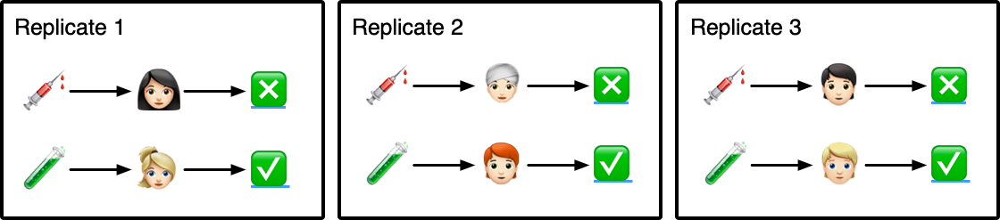
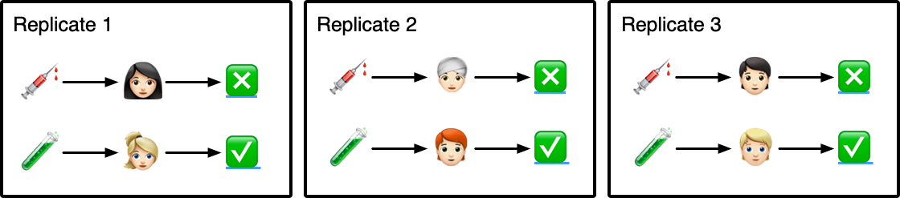

1 Basics
If the design of an experiment is faulty, any method of interpretation which makes it out to be decisive must be faulty too.
–Fisher, 1935, Design of Experiments
Data is a resultant reality, as such any examination of the data to answer questions in a satisfying manner require comprehension of the origin of the data, i.e. how was the data collected? For experimental data, this includes knowing the experimental aim and design.
There are many articles and books dedicated to explaining the concepts of experimental designs. This includes the seminal book by Fisher (1935), Bailey (2008), etc. This chapter presents an overview of the statistical concepts that are most pertinent in designing an experiment.
Most experiments are comparative in nature, or more specifically, most experiments involve study of two or more experimental conditions in which the primary interest is to compare the outcome under the different conditions. You’ll therefore find that most experiments in this book are comparative experiments.
At the heart of each experiment, we are ultimately seeking confidence in any conclusion we are making from the analysis of the experimental data. What is perhaps not emphasised enough is that the experiments are human endeavours. Often there are multiple people involved in running experiments and a key challenge is to ensure each individual has sufficient understanding to play their role well. We touch more on this in Chapter 4.
All experiments have a cost whether that be financial, resources, time or other. We can consider the experimental cost as a function of the ability to redo the experiment again. For example, if your experimental resources are based on examination of fossils and the fossils are destroyed in the experimental process, then the cost of the experiment is infinite – you only have one chance to do the experiment – so it’s absolutely essential that you plan, design and execute the experiment well.
Doing an experiment well requires a good understanding of the subject matter so that potential sources of variation can be controlled or accounted for in the experimental design. Prior to the collection of data, the statistical component of an experiment tends to be focussed on the design of the experiment, i.e. how the treatments are assigned to experimental units under practical constrains to maximise the statistical information of interest. Under this consideration, the statistical problem for experimental design is often reduced to either a randomisation or an optimisation problem and the experimental context may be stripped away in the generation of the design using computer software. We discuss this in ?sec-context, then describe a system that encourages higher order thinking of the experimental design, termed the grammar of experimental designs, in Chapter 2, implemented as the edibble R-package and present how to get started with the edibble system to construct experimental design in Chapter 3.
Before we get into the crux of the basics of the experimental design, consider the three scenarios below. Each scenario describes an experiment where technical details have been reduced so it doesn’t serve as a distraction for now. For each scenario, try to see if you can identify what are the basic components to build the design of the experiment.
1.1 Basic terminology
The field of experimental design is large and is applied to many domains, e.g. biology, psychology, industry, finance, marketing and so on. While some specialised terminology exist, the following terminology are basic terms that are commonly understood across domains:
Unit related
- experimental unit: the smallest unit in which the treatment can independently be applied,
- observational unit: the smallest unit in which the response is measured on,
- block or cluster: the grouping of another unit such that the units within the same block or cluster is more alike in some aspect than units in different blocks or clusters,
- unit structure: the relation between the units, e.g. pots nested in particular glasshouses, subjects segregated by sex, and so on
Treatment related
- treatments: the whole set of experimental conditions in which the units are subjected to,
- treatment structure: the division of treatment levels to meaningful groups, e.g. factorial structure means all combinations across the different treatment factors,
- control in treatment refers to a standard approach used, e.g. chemotherapy is a standard way to treat patients with particular cancers, and
- placebo means a treatment designed to
Experiment related
- design: the allocation of treatment to units,
- plan or layout: the actual assignment of treatment to units, and
- experimental structure: the arrangements or constrains of experimental factors – the structure can be broadly categorised as unit and treatment structure.
The above terminology describe the experimental factors and its associations. More specifically, experimental factors are any variables that pertain to the experiment (physical or otherwise) and includes the treatments, experimental units, observational units and blocks/clusters. The associations of experimental factors include its nesting structure or say the assignment of treatment to units.
In addition to above, there are commonly understood terminology that refer to the properties of experimental designs. These include:
- balanced experiment: refers to when the replication of the treatments are equal,
- orthogonal design
- complete block design: every treatment appears exactly once in each block or cluster, otherwise it is referred to as incomplete block design,
- blinded experiments, relevant only to studies involving human subjects, refers to experiments where subjects are not informed about which treatment they received. Double-blinded studies means that both those administrating and receipient of the treatment are not informed about the actual treatment.
1.1.1 Specialised terminology
Experimental design is applicable across numerous domains, so perhaps it is not surprising that there are domain specific or specialised terminology that is used to describe the whole experimental designs, e.g. Latin Square Design, Step-Wedge Trial, Beehive Design and so on. Some recipe of these named experimental design are presented and discussed in Chapter Section 5.
1.2 Principles
All experiments have a potential to go wrong – plans may not be followed to the letter; you can’t distinguish which factor had the effect; or unknown factor is affecting the response. The degree of how wrong it went can vary but in some cases you wouldn’t even know it went wrong!
In designing an experiment, there are some safety measures that you can put in place to minimise potential issues. The basic statistical principles of experimental design outlined below form some of these safety measures.
1.2.1 Randomisation
Randomisation in the context of experimental design means that the treatment allocation to units were probabilistically determined by a mechanism where the outcome of the allocation is not (consciously or unconsciously) influenced by those involved in the experiment. The opposite spectrum of randomisation is systematic allocations of treatments to units – this means that the allocations are not probabilistic and if you know the systematic order, then you can precisely infer the allocation.
Randomisation is a core principle of experimental design. When you conduct an experiment, you are investigating factors to understand some process or phenomenon, and there will be factors which affect the response that you don’t know about – if you did, you could try to control that variable in your experiment. Randomisation protects the experiment, with no guarantee however, from potential bias.
How to randomise
Typically you can use some software to draw a random sample; in this instance it’d be a good idea to ensure this randomisation can be replicated. In R, this is typically achieved by using set.seed().
In some cases, you can use physical tools to do your randomisation so long as the tool doesn’t introduce some bias. E.g. flipping an unbiased coin or blindly drawing a paper with a number written from a covered box. While it’s easier to replicate the randomisation using a computational tool like R, it’s far more important to present the treatment allocation in a manner that the subjects involved in the experiment can accept it. For example, a water-sensitive revitalisation is planned for settlements in a developmental country such that half the settlements will be allocated to early intervention, the other half late intervention. The local community doesn’t have an understanding about randomisation but the concept of lottery is familiar – a grand ceremony is taken place with representative of the settlements drawing out a ball that allocates the settlement to early or late intervention.
Not all experiments can allocate treatments to units randomly, e.g. you can’t get your participants to smoke to study the effect of smoking, nor can you get a random agricultural land to have a drought to study how well a crop grows under drought conditions. These types of experiments are referred to as quasi-experiments or natural experiments.
1.2.2 Optimisation
Optimisation in the context of experimental design generally means that the treatment allocation to units were found by optimising some given criteria, usually denoted by a single letter (A, C, D, etc). These optimality-criteria are based on a statistical model, say,
\[\begin{equation} \boldsymbol{y} = \mathbf{X}\boldsymbol{\beta} + \boldsymbol{e},\end{equation}\]
where \(\boldsymbol{y}\) is a vector of yet unobserved responses, \(\boldsymbol{\beta}\) is a vector of experimental factor effects (e.g. treatment, block, etc), \(\mathbf{X}\) is the so-called design matrix (comprising of 0s and 1s) that map the experimental factor levels to a response, and \(\boldsymbol{e}\) is a vector of errors.
If we assume \(\boldsymbol{e} \sim N(\boldsymbol{0}, \sigma^2\mathbf{V})\) where \(\mathbf{V}\) is a positive definite covariance matrix (often assumed as \(\sigma^2\mathbf{I}\)) and \(\boldsymbol{\beta}\) are fixed effects, then \(\hat{\boldsymbol{\beta}} = (\mathbf{X}^\top\mathbf{V}^{-1}\mathbf{X})^{-1}\mathbf{X}^\top\mathbf{V}^{-1}\boldsymbol{y}\) and \(var(\hat{\boldsymbol{\beta}}) = \sigma^2(\mathbf{X}^\top\mathbf{V}^{-1}\mathbf{X})^{-1}\) where \(\mathbf{X}\) is assumed to be full rank. Note that the construction of \(\mathbf{X}\) is what we normally have control over at the experimental design stage.
Where \(\mathbf{X}\) is not full rank
If \(\mathbf{X}\) is not full rank, then there are many possible inverses of \(\mathbf{X}^\top\mathbf{V}^{-1}\mathbf{X}\), termed generalised inverse with notation as \((\mathbf{X}^\top\mathbf{V}^{-1}\mathbf{X})^{-}\). In these circumstances, the software generally makes choices for you (most likely without you knowing) of how either to modify \(\mathbf{X}\) or the generalised inverse is constructed. In most cases this doesn’t pose any detrimental consequences as most optimal criteria tends to be invariant to the choice of the generalised inverse.
Under experiments with multiple factors (which is most experiments), including where interaction effects are assumed, \(\mathbf{X}\) is not full rank. We assume that \(\mathbf{X}\) is full rank for this book, unless there is a need to explicitly address the issue.
Where \(\mathbf{V}\) is singular
In some software, \(\mathbf{V}\) may (inadvertentnly or not) be allowed to be positive semi-definite matrix. This causes issues when \(\mathbf{V}\) becomes singular or when one of the eigenvalues of \(\mathbf{V}\) is near-zero and there are some strategies that the software employs to tackle these issues.
Most optimal-criteria is based on optimising some function based on \((\mathbf{X}^\top\mathbf{V}^{-1}\mathbf{X})^{-1}\) or \(\mathbf{X}^\top\mathbf{V}^{-1}\mathbf{X}\), also known as the information matrix. The list of optimal-criteria are shown in Table XX.
| Criteria | Description | Notes |
|---|---|---|
| A-optimality | minimise \(\text{tr}\left((\mathbf{X}^\top\mathbf{V}^{-1}\mathbf{X})^{-1}\right)\) | average variance of the estimators of parameters of interest |
| C-optimality | minimise \(\text{var}(\boldsymbol{c}^\top\hat{\boldsymbol{\beta}})\) where \(\boldsymbol{c}\) is pre-determined vector of constants | |
| D-optimality | maximise \(\text{det}\left(\mathbf{X}^\top\mathbf{V}^{-1}\mathbf{X}\right)\) | sometimes this is adjusted to \([\text{det}\left(\mathbf{X}^\top\mathbf{V}^{-1}\mathbf{X}\right)]^{\frac{1}{k}}\) where \(k\) is the number of parameter |
| E-optimality | maximise the minimum eigenvalue of \(\mathbf{X}^\top\mathbf{V}^{-1}\mathbf{X}\) |
The most popular optimal-criterions are A- and D-optimality.
Optimised designs are not necessary randomised
This means that even if the design has been constructed as to optimise some criteria, you are possibly missing out on the benefits of the randomisation. Some experimental structure results in a multiple possible treatment allocations with the same optimal criteria and the software may be selecting this in a systematic way.
Optimised designs for complex experiments
Optimised designs for complex experiments can be computationally expensive. In these cases, the algorithm may be searching heuristically. You should try searching under different starting values and compare the optimal criteria obtained.
1.2.3 Bias and confounding
Biases can lurk into an experiment in many forms.
Examples of biases
- To test the effectiveness of flu vaccines, a trial for vaccine 1 is done in January and a trial for vaccine 2 is done in July.
- To study the effects of different diets for pigs, diet A is given to the first set of pigs that the farmer caught and the remaining (faster) pigs received diet B.
- A doctor decides to assign the treatment to the sickest patients while the control treatment is assigned to the healthiest patients.
Biases are not necessary introduced into the study with malicious or known intent (e.g. trying to ensure certain treatments have a better outcome by manipulating the treatment assignment). The third example is a case where the intention of the doctor is well but is introducing a selection bias.
Bias is counteracted generally by employing randomisation in the design.
Confounding, which may or may not be the result of a bias, is when the factors in the design are highly correlated which makes it hard to distinguish which factor influenced the outcome with certainty. If an experimental factor of interest is confounded with some other factor, whether that be latent or not, then you do need to redo your experiment removing or adjusting this confounding.
All experiments are confounded and some confounding are okay
In essence, all experiments are confounded. In an unstructured experiment, the units are confounded with treatment – even with enough replications, you can only distinguish the effects if the response is an additive model of contributions from the treatment and the individual, otherwise there’s little value you will get from this experiment.
Some confounding are acceptable. For example, in a randomised block experiment, different technicians may be assigned to each block. This will confound the effects of blocks and effects of technicians, but so long as these effects can be disaggregated from noise and the treatment effects, it’s not of a high concern to delineate the individual contributions from blocks and technicians.
1.2.4 Replications, repetition and duplication
In a comparative experiment, treatments are allocated to units but every unit has an individual variation (with exceptions for some, e.g. computer experiments). To distinguish the individual variation from the treatment variation, you need replication of the treatment allocation to another independent unit.
As a simple example, consider Figure 1.1 – 2 treatments are allocated to 3 participants each. If you ever only look at the outcome of a single replication in isolation, you wouldn’t know whether the outcome is a result of the treatment the participant received or some innate biological attribute of the participant, thus nothing to do with the treatment. Only by replicating and getting similar results with other sets of participants can you start to feel confident that the outcome may be associated with the treatment.

Suppose now that in Figure 1.1, participants in Replicate 3 are biological sisters of participants in Replicate 1. In this case, Replicate 3 is not a complete replicate. As biological sisters, they would share genetics (and perhaps the environment) that makes it harder to feel confident that the outcome is due to treatment instead of other shared factors between the participants.
Common phrases for replication
When we say:
- “no replication”, this is equivalent to one replication,
- “a [particular treatment level] is replicated” then it means that the treatment level has two or more replications,
- “unreplicated experiment” means that the experiment has no replication,
- “partial replication” means that a proportion of the treatments are replicated.
Partially replicated experiment
Consider an experiment with two treatments with two replicates for the first treatment and one replicate for the second treatment. This is a partially replicated (or \(p\)-rep) experiment and proportion replicated (\(p\)) is 0.5.
A distinction must be made about replication, repetition and duplication. Replication refers to the allocation of same treatment to independent units. Repetition refers to the allocation of same treatment to another unit, which may or may not be independent. Duplication refers to repeated measurement of the same unit. This distinction often cannot be made just looking at the experimental data.
| block | unit | trt | response |
|---|---|---|---|
| 1 | 1 | A | 10.1 |
| 2 | 2 | A | 9.8 |
| 3 | 3 | B | 8.8 |
| 1 | 4 | B | 8.8 |
| 2 | 5 | C | 7.4 |
| 3 | 6 | C | 7.5 |
1.2.4.1 How many replications?
Where treatments are independent (see Section X on correlated treatments), then it’s optimal to have equal, or near-equal, number of replications for each treatment.
A related question to the number of replications is sample size calculation. Sample size calculation generally requires users to pre-specify a number of parameters, e.g. statistical power and expected effect size (or its difference).
Larger sample size (and thus the number of replications) is always statistically desired for higher certainty in the analysis, but practical constraints will always counteract this. Avoid designing an unreplicated experiment. It’s better to have some replication, even if it’s only one more.
Above are statistical perspectives for the desired number of replications. In practice, the number of replications are also determined by non-statistical reasons. E.g., there are only limited number of treatments in stock; not enough subjects that qualify for treatments, time constraints and so on.
Pseudo-replications
Pseudo-replication refers to the analysis where repetitions of the treatment are treated as replications.
1.2.5 Blocking
Blocks are factors that group units that are alike together. Some units have natural discrete divisions, e.g. sex for animals, that should be used for blocking. Some units differ in qualities on a continuous scale (e.g. age, weight, space, time) and artificial thresholds may be chosen to group these units.
How to assign units to blocks
Where possible, it is better to have blocks of equal or near-equal size. Also where possible, it is better to have at least one occurence of each treatment in every block. This is of course not possible if the block size is smaller than the number of treatments – in this case, it is desirable to have every pair of treatments appear equal or near-equal times across blocks.
1.3 Choosing factors
1.3.1 Choices of units
1.3.2 Choices of treatments
The choice of treatments must be guided by the domain expert, however in some cases this may be guided by statistics. These generally include treatments that can be encoded as a numerical value, such as in dose finding experiments or Latin hyper cube sampling. In dose finding experiment, small-scale screening experiments may be done first to determine the dose levels for the larger trial. For Latin hyper cube sampling, several factors that have a continuous range and the level is sampled in a way that maximises a certain criterion.
The effectiveness of any treatment is only established in relation to another treatment, e.g. the control. As an analogy, consider a student that has been heralded as a mathematical genius because she has been getting perfect scores in all her assessments. But if you find out that all the other students in her class has been getting perfect scores as well, then you may rescind calling her a mathematical genius. The thing is though, all the students could indeed be mathematical geniuses but without comparisons with typical mathematics students, you will not be sure. Wrong comparisons could also be made, e.g. comparing the student with a member of general public, who does not practice mathematics day-to-day, leads to a logical fallacy of student appearing to excel in mathematics, when in fact it would be expected she would be better at mathematics than those who don’t make regular use of it.
Choice of control treatment
The control treatment should be chosen such that the comparison is meaningful. For example, a new cancer treatment shouldn’t be compared to “no treatment” but to the standard approach to treat cancer. Not only may it be unethical to assign a “no treatment” to a cancer patient, it is wasteful of experimental resources to design experiments where there there is little interest in comparing to “no treatment”.
1.3.3 Choices of data to record
1.4 Diagnosis
This section addresses the statistical diagnosis of an experimental design. In addition, there are non-statistical diagnosis that should be made by the domain experts.
1.4.1 Design anatomy
The design anatomy, or sometimes referred to as skeleton anova, shows the decomposition of the degrees of freedom for different sources of variation. This is important in finding out if there are any terms that are aliasing (i.e. perfectly confounded) or have low information.
1.4.2 Diagrams
1.4.3 Simulate
It’s good practice to simulate the data for the given design and try fitting the model in the analysis plan. This can help reflect about your design and also reveal any issues with fitting the planned model. You may plan for some complex model, however keep in mind that it doesn’t mean you can fit that model since you may be hit with issues like where model fails to converge and memory or speed issues with big data.
1.5 Analysis
Before starting the experiment, it is important to have an analysis plan of the experimental data.
1.5.1 To include or not include blocking factors in your model?
The general consensus from the experimental design community is that you should include blocking factors in your model, regardless of whether the effect is significant or not, if the blocking factors were used to generate the experimental design. Some argue that if your aim is prediction, then it is better to remove the insignificant block effects.
My recommendation is that all factors used to generate the design should be used in your analysis model. If some blocking factors prove to be insignificant, then check to see how your analysis changes if you remove them.
1.6 Data collection issues
Recognising potential data collection issues at the experimental design stage can be helpful in ensuring that there are sufficient and accurate data at the analysis stage. Some situations that can arise are:
- missing data,
- change in instrument to measure response,
- loss of data integrity (i.e. issues related to record, storage and access of data), and/or
- non-compliance of experimental protocol.
In planning an experiment, it’s not prudent that the most statistical optimal design is produced. It is better to produce a design that technician can follow without great difficulty than produce a complex design that’s likely to result in a mistake in carrying it out.
1.7 Ethics
While the aim of experiments may be to advance our knowledge or understanding, this doesn’t mean all experiments should be conducted. The Belmont report by the National Commission for the Proptection of Human Subjects of Biomedical and Behavioral Research (1978) outlines the ethical principles and guidelines for the protection of human subjects of research. A similar guideline would be available for animal subjects.
Besides the protection of the subjects, the experiment should not go ahead if there is little possibility of extracting meaningful analysis. These include cases where the sample size is small so no conclusive evidence can be drawn from the experiment, or where the collected data does not answer the aim of the experiment.
1.8 Protocol
Some domains require experimental protocol to be pre-registered.
1.9 Summary
The major concepts this chapter covered are:
- basic statistical terminology for experimental design
- importance of replication and randomisation in experiments
- pitfalls of pseudo-replication
1.10 Exercises
- A farmer would like to know which diet is most effective in increasing the weight of the pigs. There are three types of diet that he wishes to test. For this scenario, describe the experimental aim, treatments, experimental units, observational units and the experimental design.